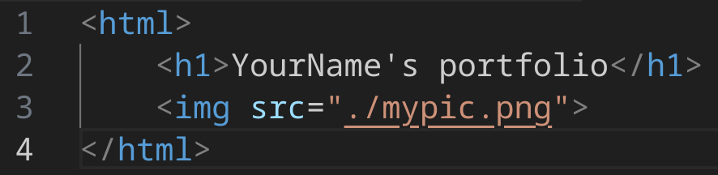

Fabian's portfolio
How to create a personal GitHub webpage
Requirements
- Internet access
- Browser
- Code editor, e.g. Visual Studio Code
How to
- In the file manager of your operating system create a folder and name it whatever you like
- Paste an image of yourself to that folder and note its exact name including the extension (e.g. mypic.png)
- Launch the code editor and create a new text file. Save it to the folder you just created naming it index.html
- Write the following lines of code to the new text file:

Replace YourName by your name.
- Within your browser navigate to github.com and opt for sign up or sign in if you already have an account.
- Once logged in you will see a new button next to the top repositories. Click it.
- In the form showing up now fill the field for Repository name with a name as follows:
'yourname.github.io' (whereas yourname should be replaced by a name of your choice)
- In the line below you can add a description of the project you are planning to commit.
- Confirm by clicking create
- In the next step in the quick setup section you'll see a link saying uploading an existing file. Click that.
- Now, you can either drag and drop the two files (png and html) to the designated area or upload them by clicking choose your files and then selecting the two files from your file manager
- To complete this step you need to hit commit changes
Switch to your browser and type 'yourname.github.io' to the address bar. If everything went as it should you will now see your irst page on github.